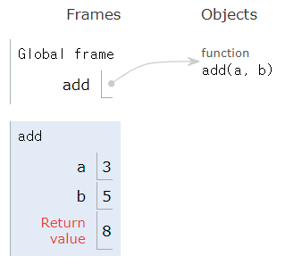
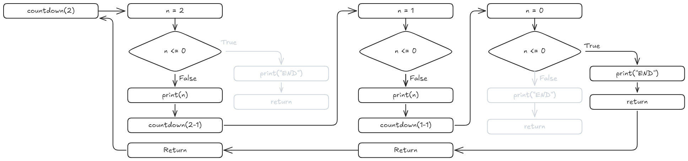

def add(a, b):
return a + b
result = add(3, 5)
print(result) 8함수는(Function) 특정 작업을 수행하는 코드 블록으로, 코드의 재사용성을 높이고 가독성을 개선하는 역할을 한다. Python에서 함수는 def 키워드를 사용하여 정의한다.
함수 정의 및 호출 문법 Note 5.1에 따라 수행한다.
def add(a, b):
return a + b
result = add(3, 5)
print(result) 8
def 키워드로 함수를 정의add(a, b): 두 개의 매개변수(a, b)를 받아 더한 값을 반환return 문을 사용하여 결과를 반환add(3, 5)와 같이 호출하면 8이 출력Python에서 함수 매개변수는 함수를 호출할 때 전달되는 값(인자, argument)을 받는 변수이다. 매개변수를 설정하는 방식에 따라 다양한 형태로 사용할 수 있다.
| 매개변수 유형 | 설명 | 예시 |
|---|---|---|
| 기본 매개변수 | 필수 인자를 받아야 하는 매개변수 | def func(a, b): |
| 기본값 매개변수 | 기본값을 설정할 수 있는 매개변수 | def func(a, b=10): |
| 위치 인자 | 순서에 따라 전달되는 인자 | func(1, 2) |
| 키워드 인자 | 매개변수명=값 형식으로 전달되는 인자 |
func(a=1, b=2) |
| 가변 위치 인자(*args) | 여러 개의 위치 인자를 튜플로 받을 수 있음 | def func(*args): |
| 가변 키워드 인자(**kwargs) | 여러 개의 키워드 인자를 딕셔너리로 받을 수 있음 | def func(**kwargs): |
| 위치 전용 매개변수 | / 앞의 매개변수는 위치 인자로만 사용 가능 |
def func(a, b, /): |
| 키워드 전용 매개변수 | * 뒤의 매개변수는 키워드 인자로만 사용 가능 |
def func(*, a, b): |
이러한 매개변수 방식을 조합하여 다양한 형태의 함수를 정의할 수 있다.
함수를 정의할 때 매개변수를 지정하면, 해당 함수는 반드시 인자를 전달받아야 한다.
def greet(name):
print(f"안녕하세요, {name}님!")
greet("철수")
greet() # 오류 발생 (TypeError)안녕하세요, 철수님!--------------------------------------------------------------------------- TypeError Traceback (most recent call last) Cell In[2], line 6 2 print(f"안녕하세요, {name}님!") 4 greet("철수") ----> 6 greet() # 오류 발생 (TypeError) TypeError: greet() missing 1 required positional argument: 'name'
greet(name) 함수는 name 매개변수를 필수로 요구greet() 호출 시 인자를 전달하지 않으면 TypeError가 발생매개변수에 기본값(Default Parameters)을 설정하면, 호출 시 인자를 전달하지 않아도 된다.
def greet(name="손님"):
print(f"안녕하세요, {name}님!")
greet("철수")
greet() 안녕하세요, 철수님!
안녕하세요, 손님님!name="손님"과 같이 기본값을 설정하면, 인자를 전달하지 않을 경우 기본값이 사용함수 호출 시 인자의 순서(Positional Arguments)에 따라 매개변수에 값이 할당된다.
def introduce(name, age):
print(f"제 이름은 {name}이고, {age}살입니다.")
introduce("영희", 25) 제 이름은 영희이고, 25살입니다.introduce(25, "영희") 제 이름은 25이고, 영희살입니다.함수 호출 시 매개변수명=값 형식(Keyword Arguments)으로 지정하여 순서를 무시할 수 있다.
introduce(age=30, name="민수")
# 출력: 제 이름은 민수이고, 30살입니다.제 이름은 민수이고, 30살입니다.여러 개의 위치 인자(*args)를 튜플(tuple) 형태로 받을 수 있다.
def sum_numbers(*args):
total = sum(args)
print(f"합계: {total}")
sum_numbers(1, 2, 3) 합계: 6sum_numbers(10, 20, 30, 40, 50) 합계: 150*args는 여러 개의 인자를 받을 수 있으며, 튜플 형태로 저장args가 아니어도 되지만, 관례적으로 args를 사용한여러 개의 키워드 인자(**kwargs)를 딕셔너리(dict) 형태로 받을 수 있다.
def print_info(**kwargs):
for key, value in kwargs.items():
print(f"{key}: {value}")
print_info(name="철수", age=25, city="서울")name: 철수
age: 25
city: 서울**kwargs는 키워드 인자를 받을 수 있으며, 딕셔너리 형태로 저장kwargs.items()를 사용하여 키와 값을 출력 가능Python 3.8부터 / 기호를 사용하여 특정 매개변수를 위치 인자(Positional-Only Parameters)로만 받을 수 있다.
def multiply(a, b, /):
return a * b
print(multiply(3, 4))
# 출력: 1212print(multiply(a=3, b=4)) # 오류 발생 (TypeError)--------------------------------------------------------------------------- TypeError Traceback (most recent call last) Cell In[11], line 1 ----> 1 print(multiply(a=3, b=4)) # 오류 발생 (TypeError) TypeError: multiply() got some positional-only arguments passed as keyword arguments: 'a, b'
/ 이전의 매개변수들은 위치 인자로만 전달해야 하며, 키워드 인자로 사용할 수 없음* 기호 이후에 정의된 매개변수는 키워드 인자(Keyword-Only Parameters)로만 전달해야 한다.
def divide(*, x, y):
return x / y
print(divide(x=10, y=2))
# 출력: 5.05.0print(divide(10, 2)) # 오류 발생 (TypeError)--------------------------------------------------------------------------- TypeError Traceback (most recent call last) Cell In[13], line 1 ----> 1 print(divide(10, 2)) # 오류 발생 (TypeError) TypeError: divide() takes 0 positional arguments but 2 were given
* 이후의 매개변수들은 반드시 키워드 인자로 전달/와 *를 함께 사용하여 위치 인자, 키워드 인자, 일반 매개변수를 조합할 수 있다.
def function(a, b, /, c, *, d):
print(a, b, c, d)
function(1, 2, 3, d=4) 1 2 3 4function(1, 2, c=3, d=4) 1 2 3 4function(a=1, b=2, c=3, d=4) # 오류 발생 (TypeError)--------------------------------------------------------------------------- TypeError Traceback (most recent call last) Cell In[16], line 1 ----> 1 function(a=1, b=2, c=3, d=4) # 오류 발생 (TypeError) TypeError: function() got some positional-only arguments passed as keyword arguments: 'a, b'
a와 b는 위치 인자로만 사용 가능c는 위치 또는 키워드 인자로 사용 가능d는 키워드 인자로만 사용기본값이 있는 매개변수와 *args, **kwargs를 함께 사용할 수 있다.
def example(a, b=10, *args, c=20, **kwargs):
print(f"a: {a}, b: {b}, c: {c}")
print(f"args: {args}")
print(f"kwargs: {kwargs}")
example(1, 2, 3, 4, c=5, d=6, e=7)a: 1, b: 2, c: 5
args: (3, 4)
kwargs: {'d': 6, 'e': 7}b와 c는 기본값을 가짐*args는 위치 인자를 추가적으로 받을 수 있음**kwargs는 키워드 인자를 추가적으로 받을 수 있음Python에서 익명 함수(lambda)는 lambda 키워드를 사용하여 정의하는 한 줄짜리 함수이다. 일반적인 def 함수와 달리 이름이 없으며, 간단한 연산을 수행하는 데 사용된다.
lambda 매개변수1, 매개변수2, ... : 표현식lambda 키워드로 함수를 정의한다.매개변수는 여러 개 입력받을 수 있다.: 이후에 오는 표현식(expression)이 반환값이 된다.# 일반적인 함수 정의
def add(a, b):
return a + b
# lambda로 변환
add_lambda = lambda a, b: a + b
print(add(3, 5)) # 88print(add_lambda(3, 5)) # 88lambda a, b: a + b는 add(a, b) 함수와 동일하게 동작multiply = lambda x, y: x * y
print(multiply(4, 5)) # 2020lambda x, y: x * y는 두 숫자의 곱을 반환하는 함수lambda와 map() 함수
numbers = [1, 2, 3, 4, 5]
squared = list(map(lambda x: x ** 2, numbers))
print(squared) # [1, 4, 9, 16, 25][1, 4, 9, 16, 25]map(lambda x: x ** 2, numbers)는 리스트의 각 요소를 제곱lambda와 filter() 함수
numbers = [1, 2, 3, 4, 5, 6]
even_numbers = list(filter(lambda x: x % 2 == 0, numbers))
print(even_numbers) # [2, 4, 6][2, 4, 6]filter(lambda x: x % 2 == 0, numbers)는 리스트에서 짝수만 필터링lambda와 sorted() 함수
students = [("철수", 90), ("영희", 85), ("민수", 95)]
sorted_students = sorted(students, key=lambda x: x[1], reverse=True)
print(sorted_students)[('민수', 95), ('철수', 90), ('영희', 85)]key=lambda x: x[1]을 사용하여 두 번째 요소(점수)를 기준으로 정렬reduce() 함수from functools import reduce
numbers = [1, 2, 3, 4, 5]
result = reduce(lambda x, y: x * y, numbers)
print(result) # 120 (1 * 2 * 3 * 4 * 5)120reduce(lambda x, y: x * y, numbers)는 리스트의 모든 요소를 곱함| 비교 항목 | lambda 함수 | 일반 함수 (def) |
|---|---|---|
| 정의 방식 | lambda 키워드 사용 |
def 키워드 사용 |
| 이름 | 없음(익명 함수) | 있음 |
| 코드 길이 | 한 줄로 작성 | 여러 줄 작성 가능 |
| 반환값 | 자동으로 표현식의 결과 반환 | return을 사용해야 함 |
| 사용 용도 | 간단한 연산 | 복잡한 로직 구현 |
하지만, 복잡한 연산이나 여러 줄의 코드가 필요한 경우에는 def 함수가 더 적합하다.
Python에서 함수는 return 키워드를 사용하여 값을 반환할 수 있다. 반환값을 이용하면 함수의 실행 결과를 저장하고, 다른 연산에 활용할 수 있다.
| 개념 | 설명 |
|---|---|
| 기본 반환값 | return 값을 사용해 특정 값을 반환 |
| 여러 개 반환 | return a, b를 사용하면 튜플로 반환 |
| 조건부 반환 | if 문을 사용해 특정 조건에서만 반환 가능 |
| 리스트/딕셔너리 반환 | 여러 데이터를 리스트나 딕셔너리 형태로 반환 가능 |
| return 없음 | None을 반환 |
| 제너레이터 반환 | yield를 사용하면 값들을 순차적으로 생성 |
Python의 return 문은 함수의 종료를 의미하며, 다양한 형태의 데이터를 반환할 수 있다.
def add(a, b):
return a + b
result = add(3, 5)
print(result) # 88return a + b: 두 숫자의 합을 반환result 변수에 저장Python에서는 여러 개의 값을 반환할 수 있으며, 이는 튜플(tuple)로 반환된다.
def get_info():
name = "철수"
age = 25
return name, age
info = get_info()
print(info) # ('철수', 25)('철수', 25)print(info[0]) # 철수철수print(info[1]) # 2525return name, age는 (name, age) 형태의 튜플을 반환name, age = get_info()
print(name) # 철수
print(age) # 25철수
25return 문이 없거나, return 키워드만 사용하면 None이 반환된다.def greet():
print("안녕하세요!")
result = greet()
print(result) # None안녕하세요!
Noneprint() 함수는 값을 반환하지 않으므로 None이 저장def check_even(n):
if n % 2 == 0:
return "짝수"
return "홀수"
print(check_even(4)) # 짝수짝수print(check_even(7)) # 홀수홀수return "짝수" 실행 후 함수가 종료되므로, 이후 코드는 실행되지 않음리스트 반환
def get_numbers():
return [1, 2, 3, 4, 5]
print(get_numbers()) # [1, 2, 3, 4, 5][1, 2, 3, 4, 5]딕셔너리 반환
def get_student():
return {"name": "영희", "age": 22}
print(get_student()) # {'name': '영희', 'age': 22}{'name': '영희', 'age': 22}| 상황 | 반환값 |
|---|---|
return 값 사용 |
해당 값 반환 |
return만 사용 |
None 반환 |
return이 없는 함수 |
None 반환 |
def example():
return
print(example()) # NoneNonereturn 대신 yield를 사용하면 제너레이터(generator)를 반환한다.
def count_up(n):
for i in range(n):
yield i
gen = count_up(3)
print(list(gen)) # [0, 1, 2][0, 1, 2]yield는 값을 하나씩 생성하며, return과 달리 함수를 종료하지 않음.Python에서 재귀함수(recursive function)는 자기 자신을 호출하는 함수를 의미한다. 반복문 없이 특정 작업을 반복할 수 있으며, 분할 정복(Divide and Conquer) 1 같은 알고리즘에서 자주 사용된다.
def recursive():
print("재귀 호출")
recursive() # 자기 자신을 호출
recursive() # 실행하면 무한 루프 발생recursive() 내부에서 다시 recursive()를 호출
def countdown(n):
if n <= 0: # 종료 조건
print("끝!")
return
print(n)
countdown(n - 1) # 자기 자신을 호출 (n 감소)
countdown(5)5
4
3
2
1
끝!n이 0 이하가 되면 return하여 종료def factorial(n):
if n == 0 or n == 1: # 종료 조건
return 1
return n * factorial(n - 1) # 자기 자신을 호출
print(factorial(5)) # 120120factorial(5) = 5 * 4 * 3 * 2 * 1 = 120if n == 0 or n == 1을 설정하여 재귀를 멈춤춤def fibonacci(n):
if n == 0:
return 0
elif n == 1:
return 1
return fibonacci(n - 1) + fibonacci(n - 2) # 재귀 호출
print(fibonacci(6)) # 88fibonacci(6) = fibonacci(5) + fibonacci(4) = 8Python은 기본적으로 재귀 호출 가능 횟수(깊이)를 제한(Recursion Limit)한다.
기본 최대 깊이: 1,000번
import sys
print(sys.getrecursionlimit()) # 1000RecursionError 발생재귀 깊이 제한 변경 가능
sys.setrecursionlimit(2000) # 최대 재귀 깊이를 2000으로 설정꼬리 재귀(Tail Recursion): 함수의 마지막 동작이 자기 자신을 호출하는 형태, 일반적으로 반복문으로 변환 가능하며, 일부 언어에서는 최적화(Tail Call Optimization, TCO)를 지원하지만, Python은 지원하지 않는다.
def tail_recursive(n, result=1):
if n == 0:
return result
return tail_recursive(n - 1, n * result) # 변수로 결과 유지
print(tail_recursive(5)) # 120120하지만, 일반적인 반복문으로 해결 가능한 경우에는 재귀보다 반복문을 사용하는 것이 성능상 유리하다.
Python에서 변수의 유효 범위(Scope)는 변수가 어디에서 접근할 수 있는지를 결정한다. Python은 LEGB 규칙(Local → Enclosing → Global → Built-in)에 따라 변수를 찾는다.
| 범위 | 선언 위치 | 접근 가능 범위 | 변경 가능 여부 |
|---|---|---|---|
| 지역(Local) | 함수 내부 | 함수 내부에서만 가능 | O |
| 비지역(Enclosing) | 중첩 함수의 바깥 함수 | 내부 함수에서 접근 가능 | nonlocal 사용 시 가능 |
| 전역(Global) | 함수 외부 | 프로그램 전체에서 접근 가능 | global 사용 시 가능 |
| 내장(Built-in) | Python 기본 제공 | 모든 코드에서 접근 가능 | 변경 불가 |
Python은 LEGB 규칙에 따라 변수를 찾으며, 함수 내부에서 전역 변수나 바깥 함수 변수를 변경하려면 global 또는 nonlocal 키워드를 사용해야 한다.
| 범위 | 설명 | 예시 |
|---|---|---|
| Local (지역 범위) | 현재 함수 내부에서 선언된 변수 | 함수 내부의 변수 |
| Enclosing (비지역 범위) | 중첩 함수(내부 함수)에서 바깥쪽 함수의 변수 | 내부 함수에서 바깥 함수 변수 참조 |
| Global (전역 범위) | 파일 전체에서 접근 가능한 변수 | 함수 외부에서 선언된 변수 |
| Built-in (내장 범위) | Python이 기본 제공하는 변수 및 함수 | len(), print(), sum() 등 |
함수 내부에서 선언된 변수는 지역 변수이며, 함수 내부에서만 접근 가능하다.
def my_function():
x = 10 # 지역 변수
print(x)my_function()
print(x) # 오류 발생 (NameError)10--------------------------------------------------------------------------- NameError Traceback (most recent call last) Cell In[45], line 2 1 my_function() ----> 2 print(x) # 오류 발생 (NameError) NameError: name 'x' is not defined
x는 my_function() 내부에서만 사용 가능x를 호출하면 오류(NameError)가 발생함수 바깥에서 선언된 변수는 전역 변수이며, 코드 전체에서 접근 가능하다.
y = 20 # 전역 변수
def my_function():
print(y) # 전역 변수 사용 가능
my_function() # 2020y는 함수 내부에서도 접근 가능함수 내부에서 전역 변수를 변경하려면 global 키워드를 사용해야 한다.
x = 10 # 전역 변수
def modify_global():
global x # 전역 변수 변경 선언
x = 20 # 전역 변수 값 변경
modify_global()
print(x) # 2020global x를 선언하면 함수 내부에서 전역 변수 x를 변경 가능global 없이 x = 20을 하면 지역 변수 x가 생성되므로, 전역 변수 x는 변경되지 않음중첩 함수(nested function)에서 바깥쪽 함수의 변수를 내부 함수에서 참조할 수 있다.
def outer():
a = 5 # 비지역 변수
def inner():
print(a) # 바깥 함수 변수 사용 가능
inner()
outer() # 55inner() 함수는 outer() 함수의 변수 a 사용 가능내부 함수에서 바깥 함수의 변수를 변경하려면 nonlocal 키워드를 사용해야 한다.
def outer():
a = 5
def inner():
nonlocal a # 바깥 함수 변수 변경 선언
a = 10 # 비지역 변수 변경
inner()
print(a) # 10
outer()10nonlocal a를 사용하면 a의 값 변경 가능nonlocal이 없으면 a는 지역 변수로 새롭게 생성x = 100 # 전역 변수
def outer():
x = 50 # 비지역 변수
def inner():
x = 10 # 지역 변수
print(x) # 지역 변수 사용 (10)
inner()
print(x) # 비지역 변수 사용 (50)
outer()
print(x) # 전역 변수 사용 (100)10
50
100inner() 내부에서는 가장 가까운 범위(지역 변수 x)를 먼저 찾음.inner()가 실행된 후 outer()에서 x를 출력하면 비지역 변수(50) 유지outer()가 실행된 후 전역 변수(100)는 변하지 않음Python에서 데코레이터(Decorator)는 기존 함수나 메서드의 동작을 변경하거나 확장할 때 사용되는 기능이다. @데코레이터_함수 형식으로 사용하며, 함수를 감싸는(wrapper) 역할을 수행한다.
def my_decorator(func): # 데코레이터 함수
def wrapper():
print("함수 실행 전")
func()
print("함수 실행 후")
return wrapper
@my_decorator
def say_hello():
print("Hello, World!")
say_hello()함수 실행 전
Hello, World!
함수 실행 후@my_decorator를 사용하면 say_hello()가 자동으로 wrapper() 함수로 감싸짐."함수 실행 전" 출력say_hello() 실행"함수 실행 후" 출력여러 개의 데코레이터를 적용하면 위에서부터 차례로 적용된다.
def decorator1(func):
def wrapper():
print("데코레이터 1 실행")
func()
return wrapper
def decorator2(func):
def wrapper():
print("데코레이터 2 실행")
func()
return wrapper
@decorator1
@decorator2
def greet():
print("안녕하세요!")
greet()데코레이터 1 실행
데코레이터 2 실행
안녕하세요!@decorator1 → @decorator2decorator1이 가장 바깥쪽에서 실행인자가 있는 함수를 데코레이터로 감싸려면 *args, **kwargs를 사용해야 한다.
def my_decorator(func):
def wrapper(*args, **kwargs):
print("함수 실행 전")
result = func(*args, **kwargs)
print("함수 실행 후")
return result
return wrapper
@my_decorator
def add(a, b):
return a + b
print(add(3, 5))함수 실행 전
함수 실행 후
8wrapper(*args, **kwargs)를 사용하여 add(a, b)의 인자를 받을 수 있도록 함데코레이터를 사용하면 원래 함수의 이름(name)과 문서(docstring)가 변경될 수 있다. 이를 방지하려면 functools.wraps()를 사용한다.
import functools
def my_decorator(func):
@functools.wraps(func) # 원래 함수 정보 유지
def wrapper(*args, **kwargs):
print("함수 실행 전")
result = func(*args, **kwargs)
print("함수 실행 후")
return result
return wrapper
@my_decorator
def add(a, b):
"""두 수를 더하는 함수"""
return a + b
print(add.__name__) # add (원래 함수 이름 유지)
print(add.__doc__) # 두 수를 더하는 함수 (문서 유지)add
두 수를 더하는 함수@functools.wraps(func)를 사용하면 함수 이름과 문서가 변경되지 않음데코레이터를 클래스로도 구현 가능하다.
class MyDecorator:
def __init__(self, func):
self.func = func
def __call__(self, *args, **kwargs):
print("함수 실행 전")
result = self.func(*args, **kwargs)
print("함수 실행 후")
return result
@MyDecorator
def say_hello():
print("Hello!")
say_hello()함수 실행 전
Hello!
함수 실행 후__call__() 메서드를 사용하면 객체를 함수처럼 호출 가능@MyDecorator를 사용하면 say_hello()가 MyDecorator 객체로 변환데코레이터에 인자를 전달하려면 함수 내부에 함수를 중첩
def repeat(n):
def decorator(func):
def wrapper(*args, **kwargs):
for _ in range(n): # n번 반복 실행
func(*args, **kwargs)
return wrapper
return decorator
@repeat(3)
def greet():
print("안녕하세요!")
greet()안녕하세요!
안녕하세요!
안녕하세요!repeat(n)이 먼저 실행된 후 @decorator가 greet()을 감쌈Python에는 기본 제공 데코레이터가 있다.
@staticmethod (정적 메서드)
:- 인스턴스(self) 없이 호출 가능한 메서드
class Math:
@staticmethod
def add(a, b):
return a + b
print(Math.add(3, 5)) # 88@classmethod (클래스 메서드)class Example:
count = 0
@classmethod
def increase(cls):
cls.count += 1
return cls.count
print(Example.increase()) # 11@property (게터)class Person:
def __init__(self, name):
self._name = name
@property
def name(self):
return self._name # 속성처럼 사용 가능
p = Person("철수")
print(p.name) # 철수철수map 함수: 리스트의 각 요소에 함수를 적용한다.
numbers = [1, 2, 3, 4]
squared = list(map(lambda x: x ** 2, numbers))
print(squared)[1, 4, 9, 16]filter 함수: 리스트의 요소를 조건에 맞게 필터링한다.
even_numbers = list(filter(lambda x: x % 2 == 0, numbers))
print(even_numbers) # [2, 4][2, 4]reduce 함수: 리스트의 요소를 누적하여 하나의 결과를 만든다.
from functools import reduce
total = reduce(lambda x, y: x + y, numbers)
print(total) # 1010Python에서 모듈(Module)은 관련된 코드(함수, 클래스, 변수 등)를 하나의 파일(.py)로 저장한 것이다. 이를 통해 코드 재사용성을 높이고, 유지보수를 용이하게 하며, 프로그램을 구조화할 수 있다.
| 개념 | 설명 |
|---|---|
| 모듈 | 관련된 함수, 클래스, 변수를 모은 .py 파일 |
| 모듈 가져오기 | import 모듈명, from 모듈명 import 이름 |
| 표준 모듈 | math, random, datetime, os 등 |
| 사용자 모듈 | 직접 만든 .py 파일을 모듈로 사용 가능 |
| 패키지 | 여러 개의 모듈을 포함하는 디렉토리 |
| 모듈 재로딩 | importlib.reload(모듈명) |
Python의 모듈과 패키지를 활용하면 코드 재사용성을 높이고, 프로그램을 체계적으로 관리할 수 있다.
모듈을 생성 및 사용하는 방법을 알아 본다.
모듈 생성은 다음과 같다.
.py)을 생성한다.# my_module.py (사용자 정의 모듈)
def greet(name):
return f"안녕하세요, {name}!"
pi = 3.14159import 모듈명을 사용하여 모듈을 가져올 수 있다.
import my_module
print(my_module.greet("철수")) # 안녕하세요, 철수!
print(my_module.pi) # 3.14159| 방법 | 설명 |
|---|---|
import 모듈명 |
모듈 전체를 가져옴 (접근 시 모듈명.이름) |
import 모듈명 as 별칭 |
모듈에 별칭을 부여 |
from 모듈명 import 이름 |
특정 함수/클래스/변수만 가져옴 |
from 모듈명 import * |
모듈의 모든 내용을 가져옴 |
# (1) 모듈 전체 가져오기
import my_module
print(my_module.greet("영희")) # 안녕하세요, 영희!# (2) 모듈 별칭 사용
import my_module as mm
print(mm.pi) # 3.14159# (3) 특정 함수만 가져오기
from my_module import greet
print(greet("민수")) # 안녕하세요, 민수!# (4) 모든 요소 가져오기 (비추천)
from my_module import *
print(greet("진수")) # 안녕하세요, 진수!
print(pi) # 3.14159from 모듈명 import *는 네임스페이스 충돌 위험이 있어 권장되지 않음모듈이 직접 실행될 때와 import될 때를 구분하기 위해 __name__ 변수를 사용한다.
# my_module.py
def greet(name):
return f"안녕하세요, {name}!"
if __name__ == "__main__":
# 직접 실행할 때만 실행됨
print(greet("테스트"))__name__ == "__main__" 조건을 사용하면 import될 때 실행되지 않음.__name__은 "__main__"이지만, import되면 "my_module"이 됨Python은 기본적으로 제공하는 표준 라이브러리 모듈이 많다.
| 모듈 | 설명 |
|---|---|
math |
수학 관련 함수 제공 |
random |
난수 생성 |
datetime |
날짜 및 시간 관리 |
os |
운영체제(OS) 관련 기능 |
sys |
시스템 관련 기능 |
time |
시간 관련 기능 |
import math
import random
import datetime
print(math.sqrt(16)) # 4.04.0print(random.randint(1, 10)) # 1~10 사이의 난수print(datetime.datetime.now()) # 현재 날짜 및 시간 출력Python은 모듈을 특정 디렉토리에서 찾는다.
모듈이 저장된 경로를 확인하려면 sys.path를 사용한다.
import sys
print(sys.path) # 모듈 검색 경로 리스트사용자 정의 모듈을 특정 디렉토리에 추가하려면 다음과 같이 설정할 수 있다.
import sys
sys.path.append("C:/my_modules") # 해당 경로 추가
print(sys.path)파이썬 패키지란 관련된 여러 개의 모듈(.py 파일)을 논리적으로 묶어 놓은 디렉토리 구조를 의미한다. 패키지를 사용하면 코드의 재사용성과 관리가 용이해진다.
| 구분 | 모듈(Module) | 패키지(Package) |
|---|---|---|
| 정의 | 하나의 파이썬 파일(.py) | 여러 모듈을 담고 있는 폴더 |
| 구조 | 단일 파일로 구성 | 디렉토리(폴더)와 __init__.py 파일로 구성 |
| 사용 예 | import math |
import numpy |
| 확장성 | 단순한 기능 단위 코드 | 여러 모듈과 서브 패키지를 포함하는 복잡한 구조 가능 |
패키지는 일반적으로 디렉토리 안에 여러 모듈 파일을 포함하며, 이 디렉토리 안에 __init__.py 파일이 있어야 패키지로 인식된다. (Python 3.3 이후로는 이 파일이 없어도 패키지로 인식되지만, 하위 호환성을 위해 사용하는 경우가 많다.)
예제 패키지 구조
my_package/
__init__.py
module1.py
module2.py
sub_package/
__init__.py
sub_module1.py__init__.py: 패키지를 초기화하는 파일로, 패키지 내 모듈을 불러올 때 실행됨module1.py, module2.py: 독립적인 파이썬 모듈sub_package/: 패키지 내에 포함된 서브 패키지# 패키지 내 모듈 불러오기
import my_package.module1# my_package/module1.py에 정의된 함수 호출
my_package.module1.my_function()# 모듈의 특정 함수만 불러오기
from my_package.module1 import my_function
my_function()# 서브 패키지 내 모듈 호출
from my_package.sub_package import sub_module1
sub_module1.sub_function()| 장점 | 설명 |
|---|---|
| 코드 재사용성 | 모듈화된 코드를 여러 프로젝트에서 재사용 가능 |
| 관리 용이성 | 관련된 기능을 그룹화하여 구조적이고 체계적으로 관리 |
| 네임스페이스 관리 | 모듈 간 이름 충돌 방지 |
| 확장성 | 새로운 모듈과 기능을 쉽게 추가할 수 있음 |
| 패키지 이름 | 설명 |
|---|---|
| NumPy | 고성능 수치 계산 및 다차원 배열 처리 |
| Pandas | 데이터 분석과 조작을 위한 도구 제공 |
| Matplotlib | 데이터 시각화를 위한 그래프 및 플롯 생성 |
| Requests | HTTP 요청을 보내기 위한 라이브러리 |
| Scikit-learn | 머신러닝 알고리즘 구현과 모델링 지원 |
자세한 내용은 주요 패키지를 참고한다.
패키지 설치:
pip 명령어를 사용하여 패키지를 설치할 수 있다.
pip install numpy설치된 패키지 목록 확인:
pip list패키지 제거:
pip uninstall numpy패키지 버전 확인:
import numpy
print(numpy.__version__)패키지 만드는 과정은 다음과 같다.
__init__.py 파일 추가setup.py 파일을 작성하여 패키지로 배포 가능setup.py 예제
from setuptools import setup, find_packages
setup(
name='my_package',
version='0.1',
packages=find_packages(),
install_requires=[], # 필요한 외부 패키지 명시
)이후 아래 명령어로 설치 가능
pip install .